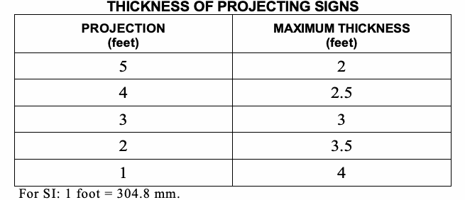

An outdoor sign shall not be erected in a manner that would confuse or obstruct the view of or interfere with exit signs required by Chapter 10 of this code or with official traffic signs, signals or devices. Signs and sign support structures, together with their supports, braces, guys and anchors, shall be kept in repair and in proper state of preservation. The display surfaces of signs shall be kept neatly painted or posted at all times. No sign shall project beyond the street line except as permitted by Chapter 32 of this code.
The signs specified in Section 28-105.4.5 of the Administrative Code are exempt from the requirements to obtain a permit before erection. The changing of moveable parts of an approved sign that is designed for such changes, or the repainting or repositioning of display matter shall not be deemed an alteration requiring a separate permit.
Unless otherwise expressly stated, the following words and terms shall, for the purposes of this appendix, have the meanings shown herein. Refer to Chapter 2 of this code for general definitions.
COMBINATION SIGN. A sign incorporating any combination of the features of pole, projecting and roof signs.
DISPLAY SIGN. The area made available by the sign structure for the purpose of displaying the sign.
FILM SIGN. A flat section of a material that is extremely thin in comparison to its length and breadth and has a nominal maximum thickness of 0.01 inch (0.25 mm).
GROUND SIGN. A billboard or similar type of sign which is supported by one or more uprights, poles or braces in or upon the ground other than a combination sign or pole sign, as defined by this code.
POLE SIGN. A sign wholly supported by a sign structure in the ground.
PROJECTING SIGN. A sign other than a wall sign, which projects from and is supported by a wall of a building or structure.
ROOF SIGN. A sign erected upon or above a roof or parapet of a building or structure.
SIGN. Any letter, figure, character, mark, plane, point, marquee sign, design, poster, pictorial, picture, stroke, stripe, line, trademark, reading matter or illuminated service, which shall be constructed, placed, attached, painted, erected, fastened or manufactured in any manner whatsoever, so that the same shall be used for the attraction of the public to any place, subject, person, firm, corporation, public performance, article, machine or merchandise, whatsoever, which is displayed in any manner outdoors. Every sign shall be classified and conform to the requirements of that classification as set forth in this chapter.
SIGN STRUCTURE. Any structure which supports or is capable of supporting a sign as defined in this code. A sign structure is permitted to be a single pole and is not required to be an integral part of the building. TEMPORARY SIGN. A sign, with display area 500 square feet (46.5 m2) or less, erected for a period of 30 days or less. WALL SIGN. Any sign attached to or erected against the wall of a building or structure, projecting no more than 15 inches (381 mm) from the face of the wall, with the exposed face of the sign in a plane parallel to the plane of said wall.
Signs shall not be erected, constructed or maintained so as to obstruct any fire escape or any window or door or opening used as a means of egress or so as to prevent free passage from one part of a roof to any other part thereof. A sign shall not be attached in any form, shape or manner to a fire escape or exterior stair, nor be placed in such manner as to interfere with any opening required for natural light or natural ventilation.
Signs erected to cover doors or windows required by Section 501.3.2 for Fire Department access to existing buildings shall be provided with access panels to such openings.
Every outdoor advertising display sign hereafter erected, constructed or maintained, for which a permit is required, shall be marked and identified in accordance with Section 28-502.5 of the Administrative Code and as required elsewhere in this appendix.
Signs shall be designed and constructed to comply with the provisions of this code for use of materials, loads and stresses.
Where a permit is required, as provided in Chapter 1, construction documents shall be required. These documents shall show the dimensions, material and required details of construction, including loads, stresses and anchors. It is the responsibility of the property owner to have every sign for which a permit is required inspected at least once every calendar year.
Signs shall be designed and constructed to withstand wind pressure as provided for in Chapter 16 of this code.
Signs shall be designed to meet seismic requirements of Chapter 16 of this code.
In outdoor advertising display signs, the allowable working stresses shall conform to the requirements of Chapter 16 of this code. The working stresses of wire rope and its fastenings shall not exceed 25 percent of the ultimate strength of the rope or fasteners.
Exceptions:
1. The allowable working stresses for steel and wood shall be in accordance with the provisions of Chapters 22 and 23 of this code.
2. The working strength of chains, cables, guys or steel rods shall not exceed one-fifth of the ultimate strength of such chains, cables, guys or steel.
Signs attached to masonry, concrete or steel shall be safely and securely fastened by means of metal anchors, bolts or approved expansion screws of sufficient size and anchorage to safely support the loads applied.
A sign shall not be illuminated by other than electrical means, and electrical devices and wiring shall be installed in accordance with the requirements of the New York City Electrical Code. Any open spark or flame shall not be used for display purposes unless specifically approved.
Wiring for electric lighting shall be entirely enclosed in the sign cabinet with a clearance of not less than 2 inches (51 mm) from the facing material.
Signs that require electrical service shall comply with the New York City Electrical Code.
All sign structures for signs requiring electric service shall be constructed of noncombustible materials, except as permitted by Section H107.
Lighting reflectors may project beyond the top or face of all signs provided that every part of such reflector is at least 10 feet (3048 mm) above the ground or sidewalk level. Reflectors shall be constructed, attached, and maintained so that they shall not be, or become, a hazard to the public.
In all signs required to be constructed of noncombustible materials pursuant to the provisions of Sections H109 through H116, the following materials may be used for moldings, cappings, nailing blocks, letters and latticing, or other purely ornamental features of signs, unless otherwise directed by the commissioner: wood, approved plastic or plastic veneer panels as provided for in Chapter 26 of this code, or other materials of combustible characteristics similar to wood.
In all signs permitted to be constructed of combustible materials pursuant to the provisions of Sections H107 through H116, wood and other materials of combustible characteristics similar to wood shall be permitted, pursuant to the provisions of Sections H109 through H116, on the display surface without limit, except that approved plastic shall be limited in area by the provisions of Section H107.1.3.
Plastic materials which burn at a rate no faster than 2.5 inches per minute (64 mm/s) when tested in accordance with ASTM D 635 shall be deemed approved plastics and can be used as the display surface material and for the letters, decorations and facings on signs, subject to the area limitations of Sections H107.1.2 through H107.1.3.
Exception: Flexible vinyl signs shall comply with the requirements of Section H114.
Except as provided for in Sections 402.14 and 2611 of this code, approved plastic used on the display surface of internally illuminated signs shall be permitted up to 200 square feet (18.6 m2) in area on signs required to be of noncombustible construction and on signs permitted to be of combustible construction.
Approved plastic used on the display surface of ground signs, walls signs, roof signs, projecting signs, and marquee signs shall be limited in area as provided by Sections H107.1.3.1 through H107.1.3.4.
On ground signs and wall signs required to be constructed of noncombustible materials, if the display surface does not exceed 150 square feet (13.9 m2), the entire display surface shall be permitted to be covered by approved plastic. If the area of a display surface exceeds 150 square feet (13.9 m2), the area occupied or covered by approved plastics shall be limited to 150 square feet (13.9 m2) plus 50 percent of the difference between 150 square feet (13.9 m2) and the total area of display surface. The area of plastic on a display surface shall not in any case exceed 1,050 square feet (97.5 m2), unless approved by the commissioner.
On ground signs and wall signs permitted to be constructed of combustible materials, if the display surface does not exceed 300 square feet (27.9 m2), 50 percent of the display surface shall be permitted to be covered by approved plastic. If the area of a display surface exceeds 300 square feet (27.9 m2), the area occupied or covered by approved plastics shall be limited to 150 square feet (13.9 m2) plus 25 percent of the difference between 150 square feet (13.9 m2) and the total area of display surface. The area of plastic on a display surface shall not in any case exceed 575 square feet (53.4 m2), unless approved by the commissioner.
On roof signs, projecting signs, and marquee signs required to be constructed of noncombustible materials, if the display surface does not exceed 150 square feet (13.9 m2), the entire display surface shall be permitted to be covered by approved plastic. If the area of a display surface exceeds 150 square feet (13.9 m2), the area occupied or covered by approved plastics shall be limited to 150 square feet (13.9 m2) plus 25 percent of the difference between 150 square feet (13.9 m2) and the total area of display surface. The area of plastic on a display surface shall not in any case exceed 575 square feet (53.4 m2), unless approved by the com-missioner.
On roof signs permitted to be constructed of combustible materials, if the display surface does not exceed 1,000 square feet (92.9 m2), 25 percent of the display surface shall be permitted to be covered by approved plastic. If the area of a display surface exceeds 1,000 square feet (92.9 m2), the area occupied or covered by approved plastics shall be limited to 250 square feet (23.2 m2) plus 10 percent of the difference between 250 square feet (23.2 m2) and the total area of display surface. The area of plastic on a display surface shall not in any case exceed 350 square feet (32.5 m2), unless approved by the commissioner.
Glass panels used in display areas of signs shall be designed in accordance with Chapter 24 of this code.
Signs that contain moving sections or ornaments shall have fail-safe provisions to prevent the section or ornament from releasing and falling or shifting its center of gravity more than 15 inches (381 mm). The fail-safe device shall be in addition to the mechanism and the mechanism's housing which operate the movable section or ornament. The fail-safe device shall be capable of supporting the full dead weight of the section or ornament when the moving mechanism releases.
Ground signs erected inside the fire districts shall be constructed entirely of noncombustible materials and the facings of such signs shall be of noncombustible materials, except as permitted by Section H107. Outside the fire districts, the structure of ground signs exceeding 25 feet (7620 mm) in height above grade or exceeding 2500 square feet (232 m2) in display area shall be constructed of noncombustible materials, and the facing of such signs shall be noncombustible, except as permitted b y Section H107.
The bottom coping of every ground sign shall be not less than 3 feet (914 mm) above the ground or street level, which space can be filled with platform decorative trim or light wooden construction.
Where wood anchors or supports are embedded in the soil, the wood shall be pressure treated with an approved preservative.
Roof signs erected inside the fire districts shall be constructed entirely of noncombustible materials and the facings of such signs shall be of noncombustible materials, except as permitted by Section H107. Outside of the fire districts, the structure of roof signs exceeding 65 feet (19 812 mm) in height above grade, or exceeding 1500 square feet (139 m2) in display area, shall be constructed of noncombustible materials and the facings of such signs shall be of noncombustible materials, except as permitted by Section H107.
Roof signs shall be constructed so as to provide a clear space of at least 7 feet (2134 mm) between the roof and the lowest part of the sign and at least 5 feet (1524 mm) between the vertical supports thereof.
Roof signs shall be set back a minimum of 6 feet (1829 mm) from the face of the walls of the building on which they are erected.
The bearing plates of roof signs shall distribute the load directly to or upon masonry walls, steel roof girders, columns or beams. The building shall be designed to avoid overstress of these members.
Wall signs erected inside the fire districts shall be constructed entirely of noncombustible materials, and the facings of such signs shall be of noncombustible materials, except as permitted by Section H107. Outside of the fire districts, the structure of wall signs exceeding 500 square feet (46 m2) in display area shall be constructed of noncombustible materials, and the facings of such signs shall be of noncombustible materials, except as permitted in Section H107.
Wall signs attached to exterior walls of solid masonry, concrete or stone shall be safely and securely attached by means of metal anchors, bolts or expansion screws of not less than 3/8 inch (9.5 mm) diameter and shall be embedded at least 5 inches (127 mm). Wood blocks shall not be used for anchorage, except in the case of wall signs attached to buildings with walls of wood. A wall sign shall not be supported by anchorages secured to an unbraced parapet wall.
Wall signs shall not extend above the top of the wall, nor beyond the ends of the wall to which the signs are attached unless such signs conform to the requirements for roof signs, projecting signs or ground signs.
Projecting signs shall be constructed entirely of noncombustible materials, and the facings of such signs shall be of noncombustible materials, except as permitted by Section H107.
Projecting signs shall be securely attached to a building or structure by metal supports such as bolts, anchors, chains, guys or steel rods. Supports shall be secured to a bolt or expansion screw that will develop the strength of the supporting chains, guys or steel rods, with a minimum ⅝-inch (15.9 mm) bolt or lag screw, by an expansion shield. Turn buckles shall be placed in chains, guys or steel rods supporting projecting signs. Staples or nails shall not be used to secure any projecting sign to any building or structure. The dead load of projecting signs not parallel to the building or structure and the load due to wind pressure shall be supported with chains, guys or steel rods having net cross-sectional dimension of not less than ⅜-inch (9.5 mm) diameter. Such supports shall be erected or maintained at an angle of at least 45 degrees (0.78 rad) from the horizontal to resist the dead load and at angle of 45 degrees (0.78 rad) or more with the face of the sign to resist the specified wind pressure. If such projecting sign exceeds 30 square feet (2.8 m2) in one facial area, there shall be provided at least two such supports on each side not more than 8 feet (2438 mm) apart to resist the wind pressure.
Chains, cables, guys or steel rods used to support the live or dead load of projecting signs are permitted to be fastened to solid masonry walls with expansion bolts or by machine screws in iron supports, but such supports shall not be attached to an unbraced parapet wall. Where the supports must be fastened to walls made of wood, the supporting anchor bolts must go through the wall and be plated or fastened on the inside in a secure manner.
A projecting sign shall not be erected on the wall of any building so as to project above the roof or cornice wall or above the roof level where there is no cornice wall; except that a sign erected at a right angle to the building, the horizontal width of which sign is perpendicular to such a wall and does not exceed 24 inches (610 mm), is permitted to be erected to a height not exceeding 5 feet (1524 mm) above the roof or cornice wall or above the roof level where there is no cornice wall. A sign attached to a corner of a building and parallel to the vertical line of such corner shall be deemed to be erected at a right angle to the building wall.
Exception: On buildings 35 feet (10 668 mm) high or less, projecting signs, not exceeding 24 inches (610 mm) in width, may be erected to a maximum height of 40 feet (12 192 mm) above grade but in no case to a height of more than 15 feet (4572 mm) above the main roof level.
Projecting sign structures which will be used to support an individual on a ladder or other servicing device, whether or not specifically designed for the servicing device, shall be capable of supporting the anticipated additional load, but not less than a 100-pound (445 N) concentrated horizontal load and a 300-pound (1334 N) concentrated vertical load applied at the point of assumed or most eccentric loading. The building component to which the projecting sign is attached shall also be designed to support the additional loads.
Projecting signs shall be limited in thickness as provided for in Table H112.6.

Projecting signs shall not be erected on buildings located on those streets and avenues listed in Section 3202.2.1.8.
Marquee signs shall be constructed entirely of noncombustible materials, and the facings of such signs shall be of noncombustible materials, except as provided for in Section H107.
Marquee signs shall be attached to approved marquees that are constructed in accordance with Section 3106 of this code and shall be anchored in conformance with the requirements for projecting signs under Section H112.
No part of a marquee sign shall project above or below the marquee fascia, or beyond the perimeter of the marquee.
Exception: On marquees attached to buildings classified as Occupancy Group A-1, skating rinks in Occupancy Group A-4 or amusement park structures in Occupancy Group A-5 marquee signs may project not more than 8 feet (2438 mm) above nor more than 1 foot (305 mm) below the fascia, provided that the total height of such signs does not exceed 9 feet (2743 mm) and the lowest part of such signs is at least 10 feet (3048 mm) above the ground or sidewalk level. Marquee signs shall not project beyond the horizontal ends of the marquee.
Marquee signs erected on marquees projecting beyond the street line shall be limited to those occupancy groups and locations provided by Section 3202.2.1.4.5 of this code.
The provisions of this section shall apply to flexible fabric signs and flexible fabric sign structures, including the fabric display area, the restraining framework, and all stiffening and fastening devices.
Fabric used in flexible fabric signs shall be flame resistant in accordance with NFPA 701 or listed under UL 214.
The same fabric shall not be used for longer than a 12-month period. The same fabric may be relocated and re-erected within that 12-month period, but in no case shall re-inking of fabrics be permitted.
Prior to installation of a flexible fabric sign, an affidavit shall be submitted to the Department in which the sign graphic producer shall attest that the sign was made from noncombustible fabric, flame-resistant fabric tested in accordance with NFPA 701 by a nationally recognized testing entity, or fabric bearing a UL classification mark obtained from the manufacturer of the fabric.
The additional requirements set forth in Sections H114.2.3.1 through H114.2.3.2 shall apply:
All signs shall bear a decal bearing the UL classification mark or name of the testing entity and its listing number, on a corner of the face of the fabric. This decal shall be of color(s) contrasting with those of the background of the display, and shall be readable from street or roadway level with the aid of binoculars.
All signs shall bear a decal identifying the date of erection of the flexible sign structure on a corner of the face of the sign fabric. This decal shall be of color(s) contrasting with those of the background of the display, and shall be readable from street or roadway level with the aid of binoculars. If the same fabric is relocated, the existing decal shall remain, and a new decal stating the re-erection date shall be affixed.
When erected on walls, flexible fabric signs exceeding 500 square feet (46.5 m2) in area shall be of the open weave type, unless backed by means of a wall sign or projecting sign structure supported as provided by Sections H111 and H112.
A flexible fabric sign attached to an exterior wall shall be attached in accordance with this section. The sign fabric shall not be placed in front of doors, windows, glass blocks, louvers, grilles, fire escapes, exterior stairs, balconies, marquees, wall recesses or projections unless backed by a wall sign or a projecting sign structure as provided by Sections H111 and H112.
Load spreader bars comprised of noncombustible materials must be inserted around the entire perimeter of the fabric display area into pockets that are either woven, or heat-welded and stitched seamed. The load spreader bars shall be provided with rounded edges to prevent tearing of the fabric.
As an alternate to load spreader bars, the side hems of the fabric may be equipped with grommets to receive spring snaps. The applicant shall determine the appropriate spacing of grommets. The sides of fabric display areas equipped with grommets may be secured with spring snaps to vertical steel wire rope in lieu of restraining angles. The vertical steel wire rope shall be anchored to the wall or other mounting surface by means of eyebolts spaced at intervals to be determined by the applicant. The ends of the vertical steel wire rope shall be restrained by means of turnbuckles or “J” hooks secured to metal angles.
Fasteners shall consist of “J” hooks secured with lock nuts or double nuts to continuous metal restraining angles around the perimeter of the display area. The “J” hooks shall extend through holes in the load spreader bars. The ends of the “J” hooks shall be secured with either safety clips or nuts in order to prevent accidental dislodging of the load spreader bars. In lieu of “J” hooks and restraining angles, the load spreader bars in the pockets along the top edge of the fabric display area may be bolted to steel flat bars.
For all flexible sign structures, the metal angles and/or steel flat bars shall be secured to the wall or other mounting surface. Angles and/or bars shall not be secured to any parapet or wall unless the applicant has determined that the parapet or wall is capable of resisting the loads imposed on it by the flexible sign structure. Unsatisfactory parapets or walls shall be braced or otherwise reinforced as determined by the applicant, prior to the erection of the flexible sign structure. A wall sign, projecting sign, roof sign or ground sign structure must be capable of resisting the loads imposed on it by the flexible sign structure.
Initial tension may be applied mechanically to the fabric display area, but it shall be held in final position by adjusting or tightening the turnbuckles, or the nuts holding the “J” hooks to the restraining angles. Mechanical tensioning devices may not remain attached to the flexible sign, except as permitted by Section H114.4.
Fabric stretched around any edge of a sign structure shall be protected from any sharp edge that may cut or tear the fabric. The perimeter of the fabric located on the front or rear of a sign structure shall be secured as required by Section H114.3, except that the “J” hooks may be secured directly to the sign structure.
Opposing ends of a fabric sign stretched around the edges of a sign structure may be secured to each other by means of mechanical tensioning devices behind the sign structure, provided that the open ends for the “S” hooks shall be closed with safety clips. Spring snaps may be used in lieu of “S” hooks. The mechanical tensioning devices shall be fastened to safety wires, placed through the holes in the load spreader bars or grommets, to prevent the devices from falling in the event of loss of tension.
The length of the fabric or safety wire perpendicular to any edge of the sign structure shall be dimensioned such that in the event of failure of any part of the flexible sign structure, no load spreader bars, mechanical tensioning devices, clamps, or wires will strike any nearby doors, windows, vents, chimneys, grilles, skylights, light fixtures, decorations or other wall appurtenances, or mechanical equipment, nor shall any load spreader bar fall within 10 feet (3048 mm) of grade.
Portable signs shall conform to requirements for ground, roof, projecting, flat and temporary signs where such signs are used in a similar capacity. The requirements of this section shall not be construed to require portable signs to have connections to surfaces, tie-downs or foundations where provisions are made by temporary means or configuration of the structure to provide stability for the expected duration of the installation.
Temporary signs less than 500 square feet (46.5 m2) in display area may be constructed of combustible materials. Temporary sign structures, with display area greater than 100 square feet (9.3 m2), shall be constructed of rigid materials with rigid frames.
Temporary signs shall be securely attached to the sign structure.
Temporary signs shall be removed no later than 30 days after erection or as soon as such sign is torn or damaged.
Temporary signs constructed of combustible materials shall not extend more than 12 inches (305 mm) over, or into, a street.
Exceptions:
1. When permitted by the Department of Transportation, temporary signs of combustible materials may be suspended from buildings or poles to extend across streets.
2. Temporary signs of combustible materials constructed without a frame may be attached flat against, or suspended from, the fascia of a canopy or marquee, provided that the lowest part of any such sign is at least 9 feet (2743 mm) above the ground or sidewalk level.
This section lists the standards that are referenced in various sections of this appendix. The standards are listed herein by the promulgating agency of the standard, the standard identification, the effective date and title and the section or sections of this document that reference the standard.
Refer to the rules of the department for any subsequent additions, modifications or deletions that may have been made to these standards in accordance with Section 28-103.19 of the Administrative Code.
The application of the referenced standards shall be as specified in Section 102.4.
ASTM D 635-10 Standard Test Method for H107.1.1 Rate of Burning and/or Extent and Time of Burning of Self-Supporting Plastics in a Horizontal Position
NFPA 70 1-04 Methods of Fire Test for H114.2 Flame Propagation of Textiles and Films
UL 214-01 Standard for Tests for Flame H114.2 Propagation of Fabrics and Films